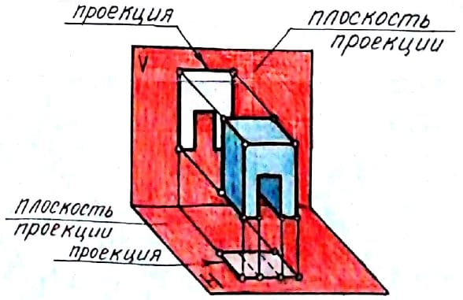
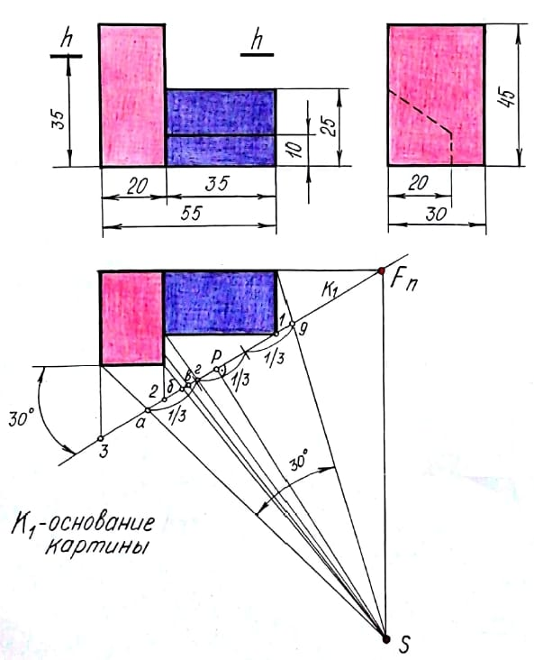
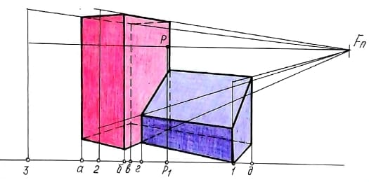

Эта тема выбрана первой неслучайно, т.к. является самой главной. Почему? Если ее изучить, то потом можно правильно выполнять задания по другим перспективам. Итак, начнем потихоньку осваивать это не очень сложное задание. Когда я начинала изучать эту тему, то у меня уже были некие знания по этому предмету, но их явно не хватило, чтоб понять как строить все перспективы, а их, на сегодняшний день вот сколько:
- Перспектива методом архитектора с одной и двумя точками схода
- Линейная, фронтальная и угловая перспективы
- Метод перспективной сетки, совмещенных высот, координатный и радиальный метод (метод следа луча)
- Разные методы для построения перспектив интерьеров и т.д.
Пришлось запастись терпением и учебниками ( тогда массового интернета в стране не было) и изучить все виды перспективы упорно и шаг за шагом. Сейчас это сделать просто. Зашел на сайт www.chertegi-vsem.ru и нашел уроки по нужным темам. Освоив принцип построения перспективы по этому несложному заданию, будет совсем просто выполнять более сложные. Итак, на ортогональных проекциях (ортог.проекция - это когда все проецирующие лучи параллельны между собой) отмечаем точки зрения и картины.
{kind=link}
Для этого картину проводим под углом 30º к фасаду через один из углов плана здания. Положение точки зрения S нужно выбрать так, чтобы угол зрения при вершине в точке S был 30º - 35º, а луч SP был бы перпендикулярен к картине и не выходил бы за пределы средней трети угла зрения. Тут же на плане определяем положение точки Fn - точки схода вертикальных прямых плана и их картинные следы 1,2,3. А вот построение перспективы точек плана можно осуществить как пересечение прямых, имеющих точку схода Fn с лучами, проведенными из точки зрения S в данные точки. Для этого на плане нужно провести лучи из точки зрения S и определить их картинные следы а,б,в,г,д. Ну как, ведь, правда все понятно и просто?
{kind=link}
Далее приступает к построению нашей перспективы увеличенной в 2 раза. Для этого надо определенное положение точек P и Fn на линии горизонта и картинных следов 1,2,3,а,б,в,г,д на основании картины К1, при этому высоту горизонта и все размеры увеличиваем в 2 раза. Картинные следа 1,2,3 соединяем с точкой схода Fn. Перспективой лучей будут вертикальные прямые, проведенные из картинных следов а,б,в,г,д. Далее, когда мы соединим построенные точки, то получим нужную нам перспективу плана объекта. Высоты строим так же, как и при двух точках схода, но чисто построений увеличивается, т.к. приходится определять высоты большего числа ребер объекта Затем, натуральные величины высот, увеличенные в 2 раза откладываем в картинных следах 1,2,3. Таким образом, соединив полученные точки с Fn и подняв ребра с плана, построим перспективу объекта.
{kind=link}
Ну вот и все, чертеж готов. По этому способу можно сделать столько красивых перспектив и даже с тенями, но об этом поговорим позже. Вперед, студент, дерзай! И все будет хорошо!
А теперь немного отвлечемся от чертежей и прочитаем чертежные частушки:
Я сижу над чертежом, то смеюсь, то плачу,
Ведь не час, не два, а три на него я трачу!
Я всю ночь чертеж чертила, линию за линией.
Утром в зеркало взглянула - сама стала синяя.
Я так долго от руки эллипсы чертила,
Что учительница мне циркуль подарила.
Я девчонка хоть куда, загляденье просто!
Только, чтоб не начертила, вечно не по ГОСТу.
Я точила карандаш, мучилась, старалась,
Очень скоро от него чурочка осталась.
Вы простите нас за все эти откровения.
Нет на свете ничего лучше, чем черчение!